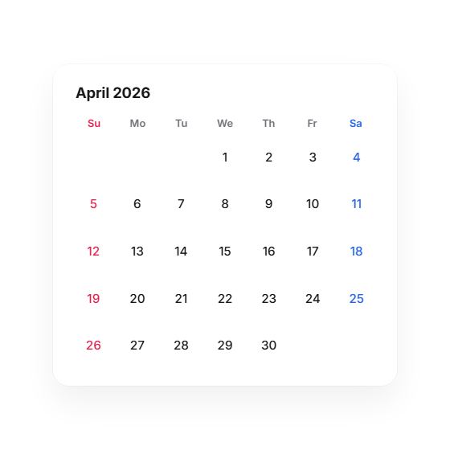
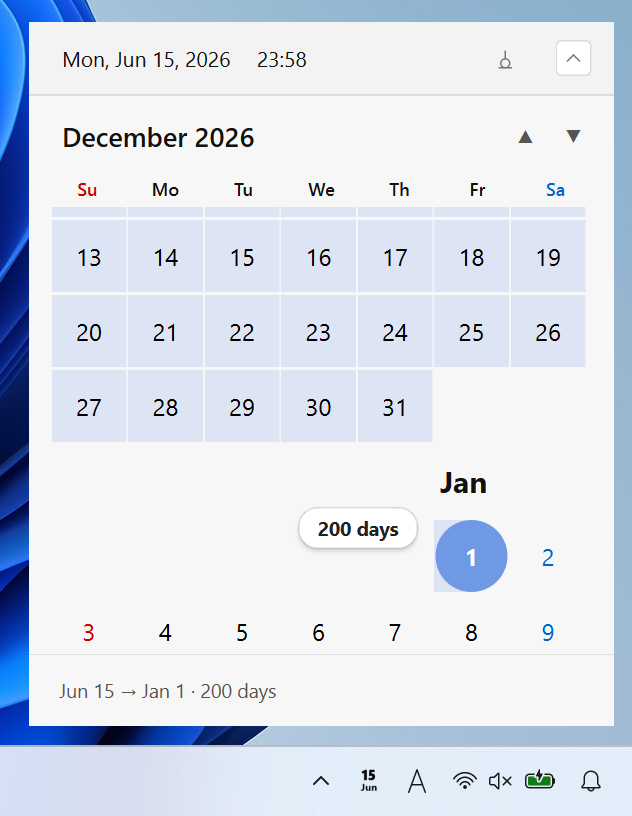
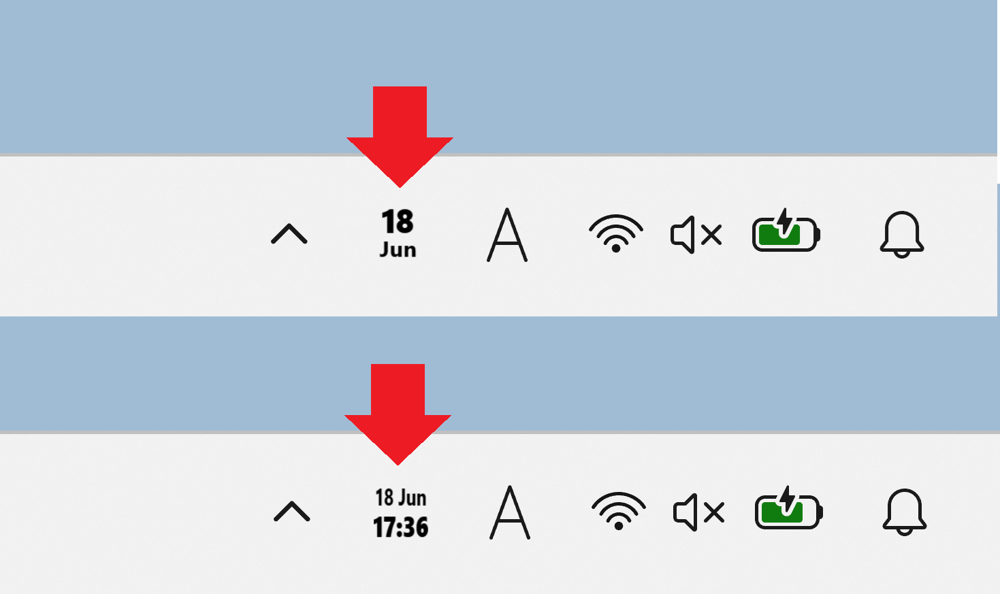
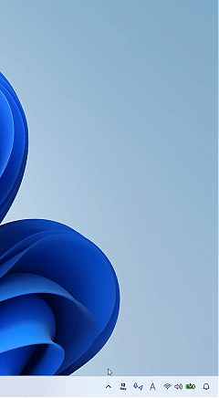
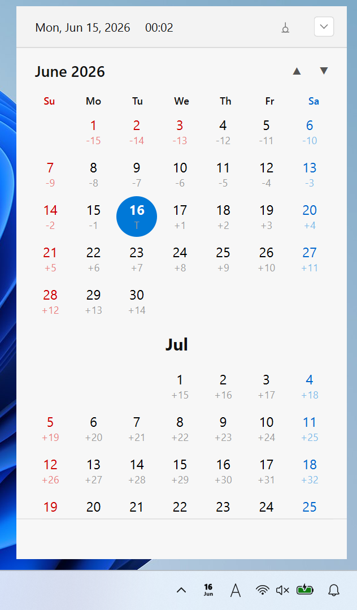
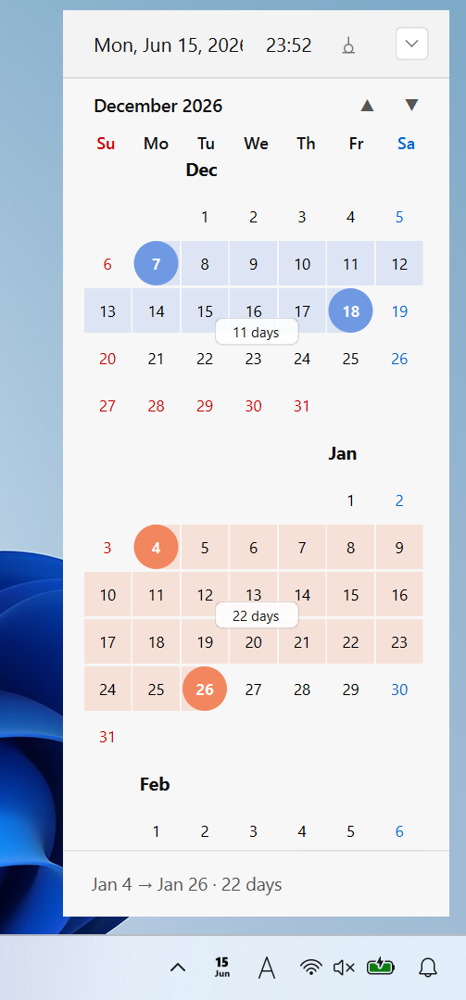
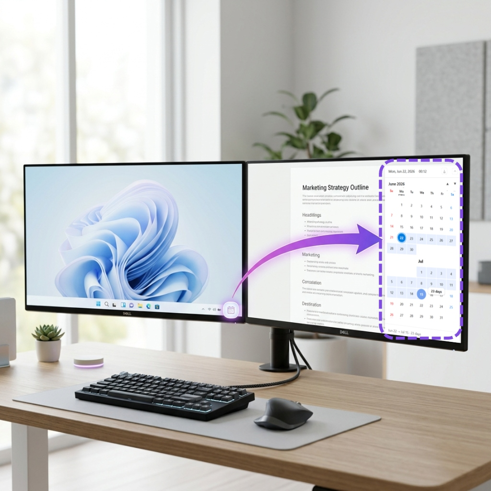
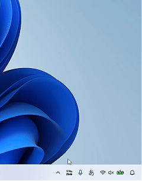

A time navigator, not just a planner. Calculate durations, compare periods, and keep today's date always visible.

Select any two dates with a simple click and drag. Instantly know the exact number of days for your projects, trips, or events without counting.

TimeScope lives seamlessly next to your Windows clock. Unlike most applications, it intentionally replaces the normal app icon with a live date display. Choose between Date-only or Date & Time modes.

Expand the calendar vertically to display multiple months seamlessly. Get a bird's-eye view of your long-term plans and vacations without flipping through pages.

Stop wondering how long ago an event was or how many days are left until a deadline. TimeScope instantly shows relative days (+/-) for every date on your calendar.

Evaluate different scenarios side-by-side. Highlight multiple date ranges to compare project timelines or travel options in a single view.

Always in sight, never in the way.
TimeScope is a lightweight panel that can be displayed on any monitor. Keep it visible while you work on your main screen, eliminating the need to constantly switch windows. Checking your schedule and referencing timelines has never been easier.


No matter how far into the future or past you've scrolled, simply press the 'T' key to instantly snap back to today.
Instantly clear your current date selection.
Smoothly zoom in and out of the calendar.
Quickly jump to frequently used periods and options.
Traditional calendars are built for scheduling meetings. TimeScope is built to help you understand time itself. Stop counting days on a grid and start seeing your timeline instantly.
Start free, upgrade for professional workflows.
| Features |
Free
$0
|
Pro
$9.99 (one-time)
|
|---|---|---|
| Duration Calculation | ✓ | ✓ |
| Relative Days Indicator | ✓ | ✓ |
| Tray Date Display | ✓ | ✓ |
| Date + Time Display | ✓ | ✓ |
| Pin to Top | ✓ | ✓ |
| Japanese / English | ✓ | ✓ |
| Resizable Calendar | ✓ | ✓ |
| Multiple Period Comparison | — | ✓ |
| Multi-Monitor Support | — | ✓ |
|
Download for Windows
via Microsoft Store
|
Upgrade to Pro
Secure checkout via Stripe
|
TimeScope runs from the Windows system tray. The icon may appear inside the hidden icons menu (▲). Unlike most applications, TimeScope displays the current date instead of the application logo.
Yes. Go to Windows Settings → Personalization → Taskbar → Other system tray icons. Enable TimeScope to place the icon permanently next to the Windows clock.
TimeScope intentionally replaces the normal application icon with a live date display. This allows today's date to remain visible at all times.
Yes. You can disable the standard Windows clock in Windows settings and use TimeScope's date display instead.
Yes. Core functionality is free forever. Pro features are optional.
Join thousands of users who have stopped counting days.
Get it from Microsoft